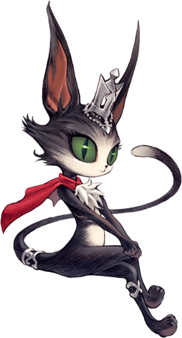

<table width=100%><tr><td width="50%" valign="top"><h1>Welcome to WingsXI!</h1>
Wings is a level 75 capped Wings of the Goddess server focused on providing a fun, feature rich gaming experience with common sense quality of life improvements.<p>

Our server includes all of the following:<br>

<ul><li>Wings of the Goddess era skill up rates and experience rates.
<li>All jobs thru Wings of the Goddess expansion.
<li>Unrestricted Level Sync.
<li>Fully fleshed out Fishing.
<li>Once-per Vana'diel day Fields of Valor.
<li>Mog Wardrobe and Mog Sack access unlocks via storyline content.
<li>A completely player-run economy.
<li>Absolutely no multiboxing, enforced by the server software.  (If you have multiple players in your household, please reach out via Discord to have an exception made for your home.)
<li>A completely <a href="https://gitlab.com/ffxiwings/wings">open-sourced code base</a> that is actively developed by multiple other servers.
</ul>

For more information, please join our Discord.<p>

</td><td width="50%" valign="top">

</td></tr></table>